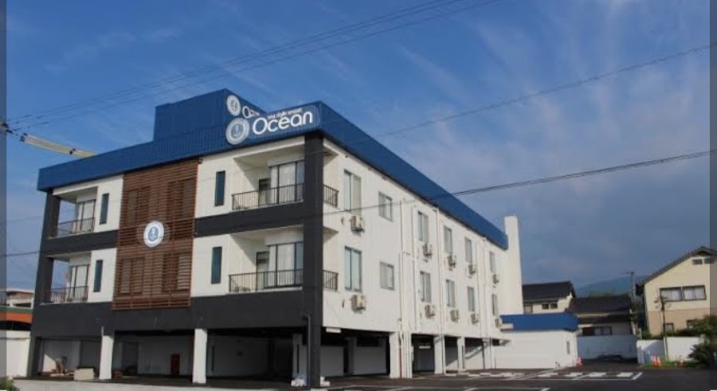
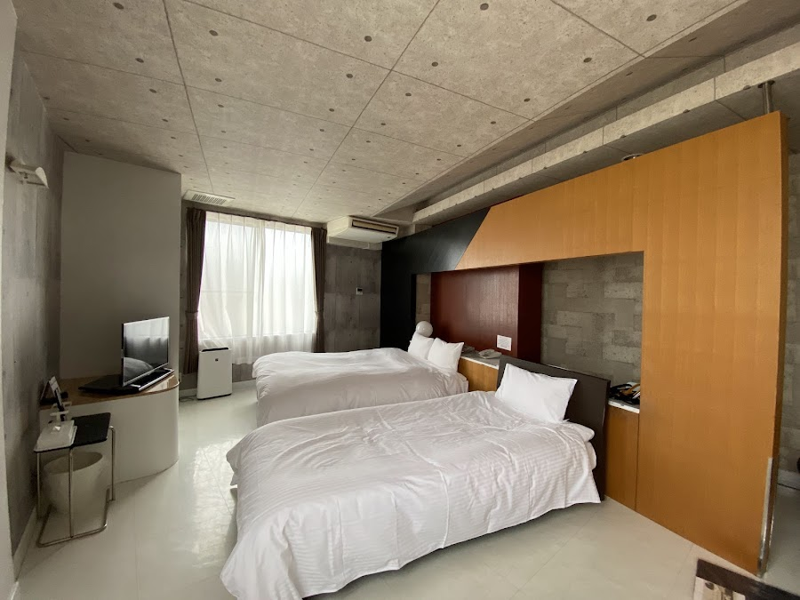
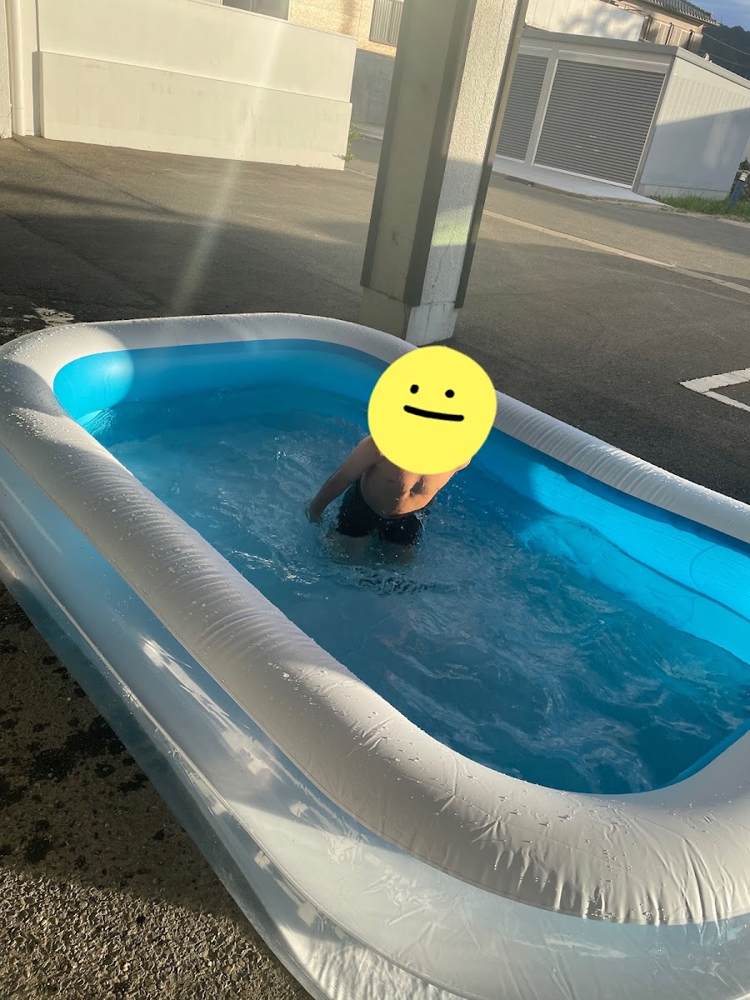
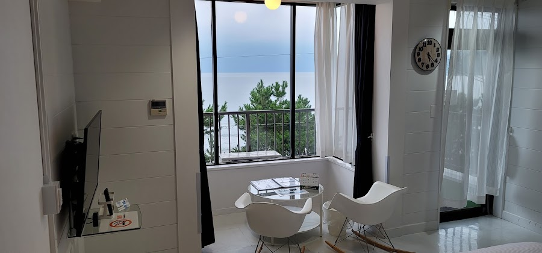
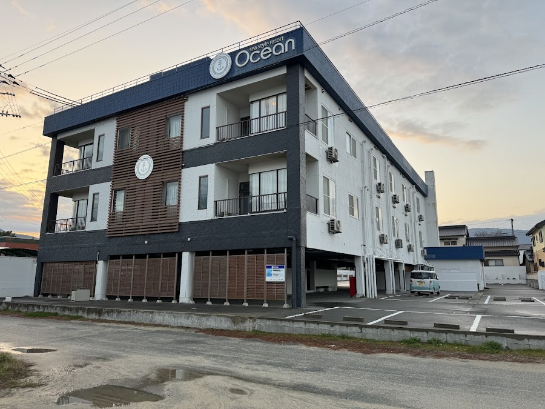

Tentative hotels (Booking.com)
Searched on Booking.com on 11 Oct 2026 for 2 adults and 1 child aged 11 in one room. Prices are Booking's total for the whole stay in SGD at search time (they will change). Each stop lists a few options, a recommended one first, and Booking search links for the whole area so you can look for others. Back to the itinerary.
How to read the features. "Hot spring bath" is Booking's explicit onsen tag. "Public bath" means a communal bath, which may or may not be a natural hot spring. "Laundry" is Booking's facility tag for laundry service or a coin laundry; none of the listings explicitly says "washing machine", so for the multi-night stays confirm the washer on the property page or by message. Booking found each of these as available for 3 guests, but check that the room is a true triple or has an extra bed. Parking is shown when Booking lists it (you have the car until 9 Dec).
<!-- confirmed-bookings:start -->
Confirmed bookings
Updated automatically by `mail_watcher.py` from Booking.com emails. A confirmed booking replaces the tentative options for its nights below.
| Check-in | Check-out | Nights | Hotel | Free cancellation until |
|---|---|---|---|---|
| 2026-12-02 | 2026-12-03 | 1 | Sea Style Resort OCEAN | check the booking |
| 2026-12-03 | 2026-12-04 | 1 | UNZIPPER KUMAMOTO - Private Sauna Stay | check the booking |
| 2026-12-04 | 2026-12-05 | 1 | Art Hotel Kagoshima | check the booking |
| 2026-12-05 | 2026-12-06 | 1 | VOYAGE Beautiful sunrise ocean view BEDROOM whole house, 2 rooms on 2nd floor, tatami room on 1st floor, &private garage | check the booking |
<!-- confirmed-bookings:end -->
Summary
| Night(s) | Recommended | Total (SGD) | Per night | Search Booking.com for the area |
|---|---|---|---|---|
| Wed 2 Dec: Karatsu | Booked: Sea Style Resort OCEAN | booked | booked | booked |
| Thu 3 Dec: Kumamoto | Booked: UNZIPPER KUMAMOTO - Private Sauna Stay | 32,269 | 32,269 | booked |
| Fri 4 Dec: Kagoshima | Booked: Art Hotel Kagoshima | 20,630 | 20,630 | booked |
| Sat 5 Dec: Nobeoka | Booked: VOYAGE Beautiful sunrise ocean view BEDROOM whole house, 2 rooms on 2nd floor, tatami room on 1st floor, &private garage | 16,500 | 16,500 | booked |
| Sun 6 Dec: Aso (Uchinomaki Onsen area) | Yumeoi-so | 284 | 284 | Search the area |
| Mon 7 and Tue 8 Dec: Beppu (2 nights, washing machine wanted) | Apartment Hotel YAEZAKI | 200 | 100 | Search the area |
| Wed 9 and Thu 10 Dec: Hakata, Fukuoka (2 nights, washing machine wanted) | Dream Inn Hakata | 306 | 153 | Search the area |
| Fri 11 to Thu 17 Dec: Osaka (7 nights, washing machine wanted) | Minn Umeda North | 1,174 | 168 | Search the area |
| Fri 18 and Sat 19 Dec: Tokyo, Ueno (2 nights, washing machine wanted) | Dormy Inn Ueno Okachimachi | 554 | 277 | Search the area |
| Sun 20 Dec: Hakodate (1 night) | Hotel Global View Hakodate | 170 | 170 | Search the area |
| Mon 21 to Fri 25 Dec: Sapporo (5 nights, washing machine wanted) | HOTEL MYSTAYS Sapporo Station | 697 | 139 | Search the area |
Indicative total for all 24 nights: about S$72,784 (booked nights at the booked price where it is known, the recommended pick for the rest); 4 of 24 nights booked.
Wed 2 Dec: Karatsu
Booked: Sea Style Resort OCEAN (1 night: check-in 2026-12-02, check-out 2026-12-03).
1799-45 Hamatamamachi Hamasaki, Karatsu, Saga 849-5131, Japan (Google Maps)
Open this hotel on Booking.com (the property page with its own room photos, rates and policies)
| Feature | What the listing says |
|---|---|
| Microwave | Yes |
| Refrigerator | Yes |
| Bath | Private bathroom with shower |
| Bathtub | Yes, in some rooms |
| Swimming pool | Not mentioned |
| Car park | Free, on site |
| Sauna | Not mentioned (no public bath listed) |
| Breakfast | Not mentioned |
| Washing machine | Not mentioned |
| Laundry | Not mentioned |
| Stove | Shared kitchen (no stove listed in the rooms) |
| View | Sea and mountain views in some rooms |
Rooms: Twin and double rooms of 30 to 40 m2; a twin room sleeps 3, which fits the party. Sea-view rooms exist: check which room type was booked.
Source: Booking.com listing, read 17 Oct 2026; Google Maps for the photos. Facilities can change: confirm anything you rely on with the hotel.





Photos by Google Maps contributors (rooms, building and views); the Booking.com page above has the official room photos.
This booking replaces the tentative options that were listed here.
Interactive map: convenience stores, parks, restaurants that match the food preferences (Google search matches: check the menu) and, for hotels used on car days, petrol stations. Radius 3 km on car days, 1 km otherwise; distances are straight-line.
Thu 3 Dec: Kumamoto
Booked: UNZIPPER KUMAMOTO - Private Sauna Stay (1 night: check-in 2026-12-03, check-out 2026-12-04).
Price on the booking: ¥32,269.
1 Koyaimamachi, Chuo Ward, Kumamoto, 860-0012, Japan (Google Maps)
This booking replaces the tentative options that were listed here.
Interactive map: convenience stores, parks, restaurants that match the food preferences (Google search matches: check the menu) and, for hotels used on car days, petrol stations. Radius 3 km on car days, 1 km otherwise; distances are straight-line.
Fri 4 Dec: Kagoshima
Booked: Art Hotel Kagoshima (1 night: check-in 2026-12-04, check-out 2026-12-05).
Price on the booking: ¥20,630.
22-1 Kamoikeshinmachi, Kagoshima, 県 Kagoshima 890-0064, Japan (Google Maps)
This booking replaces the tentative options that were listed here.
Interactive map: convenience stores, parks, restaurants that match the food preferences (Google search matches: check the menu) and, for hotels used on car days, petrol stations. Radius 3 km on car days, 1 km otherwise; distances are straight-line.
Sat 5 Dec: Nobeoka
Booked: VOYAGE Beautiful sunrise ocean view BEDROOM whole house, 2 rooms on 2nd floor, tatami room on 1st floor, &private garage (1 night: check-in 2026-12-05, check-out 2026-12-06).
Price on the booking: ¥16,500.
This booking replaces the tentative options that were listed here.
Interactive map: convenience stores, parks, restaurants that match the food preferences (Google search matches: check the menu) and, for hotels used on car days, petrol stations. Radius 3 km on car days, 1 km otherwise; distances are straight-line.
Sun 6 Dec: Aso (Uchinomaki Onsen area)
Interactive map: convenience stores, parks, discount stores, shopping malls, restaurants that match the food preferences (Google search matches: check the menu) and, for hotels used on car days, petrol stations. Radius 3 km on car days, 1 km otherwise; distances are straight-line.
Day 5 ends in Aso. Uchinomaki Onsen is next to the caldera-rim stops on Day 6 (Kabutoiwa, Daikanbo).
Search the area on Booking.com: Uchinomaki Onsen, Aso | Aso (whole area) | Kurokawa, Aso
| Hotel | Total (SGD) | Per night | Score | Features | Note |
|---|---|---|---|---|---|
| Yumeoi-so | 284 | 284 | 8.3 (463) | hot spring bath and open-air bath, family rooms, kid-friendly buffet, indoor play area, free parking | recommended |
| Shinwaen | 439 | 439 | 9.2 (222) | hot spring and open-air bath, family rooms, kids' meals, free parking | higher rated |
| Hotel Trailer Ship Garden Aso | 177 | 177 | 8.9 (93) | hot tub, laundry, family rooms, free parking | value pick |
| KAMENOI HOTEL Aso | 525 | 525 | 8.8 (1,142) | hot spring, open-air bath, kid-friendly buffet, free shuttle, free parking | splurge |
Mon 7 and Tue 8 Dec: Beppu (2 nights, washing machine wanted)
Interactive map: convenience stores, parks, discount stores, shopping malls, restaurants that match the food preferences (Google search matches: check the menu) and, for hotels used on car days, petrol stations. Radius 3 km on car days, 1 km otherwise; distances are straight-line.
Beppu is the onsen town. Two nights in the same hotel, so laundry matters. Kannawa Onsen is right next to the Hells.
Search the area on Booking.com: Beppu | Kannawa Onsen | Beppu Station
| Hotel | Total (SGD) | Per night | Score | Features | Note |
|---|---|---|---|---|---|
| Apartment Hotel YAEZAKI | 200 | 100 | 9.0 (335) | hot spring bath and open-air bath, laundry, family rooms, parking | recommended (very good value) |
| Super Hotel Beppu Ekimae | 371 | 186 | 8.8 (1,321) | hot spring bath, laundry, family rooms, parking, kid-friendly buffet | by the station |
| Kunisakisou (Kannawa Onsen) | 467 | 234 | 8.9 (560) | hot spring and open-air bath, family rooms, free parking, in the Hells area (no laundry listed) | classic onsen stay |
| Grandvrio Hotel Beppuwan Wakura | 511 | 256 | 8.9 (384) | hot spring and open-air bath, laundry, free parking, free shuttle, kid-friendly buffet | north of the town |
| Hakka | 239 | 120 | 9.4 (310) | laundry, free parking (no bath listed) | cheap, near the station |
Wed 9 and Thu 10 Dec: Hakata, Fukuoka (2 nights, washing machine wanted)
Interactive map: convenience stores, parks, discount stores, shopping malls, restaurants that match the food preferences (Google search matches: check the menu) and, for hotels used on car days, petrol stations. Radius 3 km on car days, 1 km otherwise; distances are straight-line.
You return the car at Hakata on the 9th, so no parking needed. Early Shinkansen on the 11th, so stay by the station.
Search the area on Booking.com: Hakata Station | Fukuoka (Hakata and Tenjin)
| Hotel | Total (SGD) | Per night | Score | Features | Note |
|---|---|---|---|---|---|
| Dream Inn Hakata | 306 | 153 | 8.7 (1,504) | laundry, family rooms (about 900 m south of the station) | recommended |
| THE BASICS FUKUOKA | 328 | 164 | 8.5 (3,818) | 4 stars, kids' meals, parking (no laundry listed) | |
| Hakata Tokyu REI Hotel | 421 | 210 | 8.7 (2,972) | laundry, parking, by the station | |
| THE BLOSSOM HAKATA Premier | 822 | 411 | 8.9 (3,003) | public bath, sauna, kid-friendly buffet, laundry | splurge, has a bath |
Fri 11 to Thu 17 Dec: Osaka (7 nights, washing machine wanted)
Interactive map: convenience stores, parks, discount stores, shopping malls, restaurants that match the food preferences (Google search matches: check the menu) and, for hotels used on car days, petrol stations. Radius 3 km on car days, 1 km otherwise; distances are straight-line.
Your planned base, near Umeda. It is in Fukushima Ward, about 1 km west of Osaka Station. Available for these dates for 2 adults and a child of 11. The Booking listing shows no washing machine, so check the property page or message the host; coin laundries are common in Osaka.
Search the area on Booking.com: Umeda, Osaka | Fukushima, Osaka | Osaka apartments near Umeda
| Hotel | Total (SGD) | Per night | Score | Features | Note |
|---|---|---|---|---|---|
| Minn Umeda North | 1,174 | 168 | 8.3 (633) | 2 stars, non-smoking, heating; washing machine not listed | your plan |
| Takuto Hotel Osaka Shinsaibashi | 1,575 | 225 | 8.7 (1,649) | 4 stars, laundry, family rooms, 24-hour desk; Bakuromachi, about 4 km south of Umeda | your option |
Takuto vs Minn: Takuto costs about S$225 a night against about S$168 for Minn, but has better reviews (8.7 vs 8.3), 4 stars, and a laundry tag. It sits near Honmachi and Shinsaibashi, so Namba, Dotonbori and Osaka Castle are close, but the Kyoto, Kobe and USJ trains all start at Osaka/Umeda, so most days add roughly 10 to 20 minutes each way by the Midosuji subway (my estimate, not checked). The itinerary's Osaka times assume Minn.
Fri 18 and Sat 19 Dec: Tokyo, Ueno (2 nights, washing machine wanted)
Interactive map: convenience stores, parks, discount stores, shopping malls, restaurants that match the food preferences (Google search matches: check the menu) and, for hotels used on car days, petrol stations. Radius 3 km on car days, 1 km otherwise; distances are straight-line.
Arrive Ueno about 15:41 on the 18th; Ueno Park day on the 19th; Shinkansen from Ueno on the 20th.
Search the area on Booking.com: Ueno | Okachimachi and Ueno | Nippori
| Hotel | Total (SGD) | Per night | Score | Features | Note |
|---|---|---|---|---|---|
| Dormy Inn Ueno Okachimachi | 554 | 277 | 8.4 (1,106) | public bath and open-air bath, laundry, kid-friendly buffet | recommended (bath plus laundry) |
| HOTEL MYSTAYS Ueno East | 408 | 204 | 8.1 (2,134) | family rooms, parking (no laundry listed) | value pick |
| Tabist HOTEL UENO 39 | 479 | 239 | 8.0 (433) | family rooms, 3 stars | |
| Centurion Hotel & Spa Ueno Station | 662 | 331 | 7.8 (1,350) | hot spring bath, sauna, laundry | has an onsen |
| HOTEL MYSTAYS Ueno Iriyaguchi | 430 | 215 | 7.8 (1,399) | laundry, family rooms, ironing service; Higashi-Ueno, about 1 km north-east of Ueno Park (no bath listed) | your option |
Your other option: 格安民宿 日暮里駅から徒歩4分 銀座 上野直通 (budget guesthouse, 4 minutes on foot from Nippori Station). I could not open the share link or match the property by name from here, so I have no price, laundry or bed details for 18 to 20 Dec. Open the link and check the dates for 3 guests and whether it has a washing machine. Nippori is two stops from Ueno on the JR Yamanote/Keihin-Tohoku lines and has direct access to the Keisei Skyliner (general knowledge, not checked).
Sun 20 Dec: Hakodate (1 night)
Interactive map: convenience stores, parks, discount stores, shopping malls, restaurants that match the food preferences (Google search matches: check the menu) and, for hotels used on car days, petrol stations. Radius 3 km on car days, 1 km otherwise; distances are straight-line.
Arrive about 12:50 on the 20th; leave on the 21st after Goryokaku (train at 15:01), so bags can stay at the hotel. Hakodate Station area is best for the market and the trains.
Search the area on Booking.com: Hakodate Station | Yunokawa Onsen
| Hotel | Total (SGD) | Per night | Score | Features | Note |
|---|---|---|---|---|---|
| Hotel Global View Hakodate | 170 | 170 | 8.4 (3,308) | hot spring and open-air bath, laundry, family rooms, parking | recommended |
| HOTEL MYSTAYS Hakodate Station | 52 | 52 | 8.0 (2,384) | laundry, family rooms, parking, at the station (no bath) | cheapest |
| La'gent Stay Hakodate Ekimae | 256 | 256 | 8.7 (2,815) | hot spring bath, sauna, laundry, family rooms | |
| Tokyu Stay Hakodate Asaichi Akarinoyu | 323 | 323 | 8.9 (2,512) | hot spring and open-air bath, laundry, next to the morning market |
Mon 21 to Fri 25 Dec: Sapporo (5 nights, washing machine wanted)
Interactive map: convenience stores, parks, discount stores, shopping malls, restaurants that match the food preferences (Google search matches: check the menu) and, for hotels used on car days, petrol stations. Radius 3 km on car days, 1 km otherwise; distances are straight-line.
You arrive about 18:47 on the 21st. Christmas week, so prices are high. Near Sapporo Station keeps the Otaru and Biei trains and the airport rapid easy.
Search the area on Booking.com: Sapporo Station | Odori and Susukino
| Hotel | Total (SGD) | Per night | Score | Features | Note |
|---|---|---|---|---|---|
| HOTEL MYSTAYS Sapporo Station | 697 | 139 | 8.4 (2,789) | family rooms, laundry, parking, north of the station | recommended |
| Richmond Hotel Sapporo Ekimae | 876 | 175 | 8.6 (837) | laundry, kids' meals, parking | |
| HOTEL MYSTAYS Sapporo Aspen | 981 | 196 | 8.4 (4,708) | family rooms, laundry, parking |